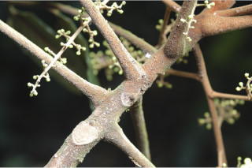
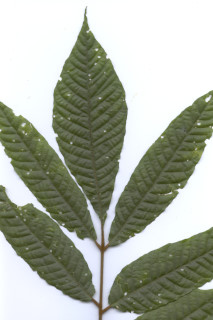
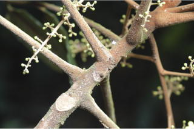
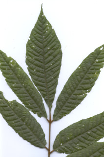

Trees up to 20 m tall.
20 ಮೀ.ಎತ್ತರದವರೆಗೆ ಬೆಳೆಯುವ ಮರಗಳು.
Trees up to 20 m tall.
மரங்கள் 20 மீ. உயரம் வரை வளரக்கூடியது.
Bark shallowly fissured, brownish; blaze brownish.
ತೊಗಟೆ ಆಳ ಹೊಂದಿರದ ಸೀಳಿಕಾ ವಿನ್ಯಾಸ ಹೊಂದಿದ್ದು ಕಂದು ಬಣ್ಣದಲ್ಲಿರುತ್ತದೆ;ಕಚ್ಚು ಮಾಡಿದ ಜಾಗ ಕಂದು.
Bark shallowly fissured, brownish; blaze brownish.
மரத்தின் பட்டை தாழ்ந்த பிளவுகளுடையது, ப்ரவுன் நிறமானது; உள்பட்டை ப்ரவுன் நிறமானது.
Young branchlets terete, with dense indumentum of reddish-brown lacerated scales and stellate hairs.
ಎಳೆಯ ಕಿರುಕೊಂಬೆಗಳು ದುಂಡಾಗಿದ್ದು ಕೆಂಪುಮಿಶ್ರಿತ ಬಣ್ಣದ,ದಟ್ಟವಾದ ಕೋಚ ಕೋಚವಾಗಿ ಸೀಳಿದ ಶಲ್ಕೆಗಳು ಮತ್ತು ನಕ್ಷತ್ರ ರೂಪದ ರೋಮಗಳಿಂದ ಕೂಡಿದ ರೋಮಾವರಣವನ್ನು ಹೊಂದಿರುತ್ತವೆ.
Young branchlets terete, with dense indumentum of reddish-brown lacerated scales and stellate hairs.
சிறியநுனிக்கிளைகள் குறுக்குவெட்டுத் தோற்றத்தில் வளையமானது, அடர்த்தியாக விளிம்புகளில் மெல்லிய பிளவுகளுடைய சிவப்பு-ப்ரவுன் நிறமான வட்ட வடிவ (பெல்டேட்) செதில்களுடையது மற்றும் நட்சத்திர வடிவ உரோமங்களுடையது .
Leaves compound, usually imparipinnate, ca. 60 cm long, alternate, spiral, pulvinate; rachis and petiolules (0.2 cm long) with lacerated scales and stellate hairs; leaflets to 5-15, opposite or subopposite, 7-15 x 2.5-5 cm long, narrowly elliptic or oblong-lanceolate, apex acuminate, base subcordate, rounded or cuneate, margin entire or irregularly toothed, glabrous above except on nerves when mature, densely covered with stellate hairs beneath; midrib canaliculate; secondary_nerves 10-14 pairs, prominent; tertiary_nerves obliquely percurrent.
ಎಲೆಗಳು ಸಂಯುಕ್ತ ಮಾದರಿಯವು, ಸಾಮಾನ್ಯವಾಗಿ ಅಸಮಸಂಖ್ಯಾ ಗರಿ ರೂಪಿಗಳಾಗಿದ್ದು ಅಂದಾಜು 60 ಸೆಂ.ಮೀ.ಉದ್ದ ಹೊಂದಿದ್ದು ಪರ್ಯಾಯ ಮತ್ತು ಸುತ್ತು ಜೋಡನಾ ವ್ಯವಸ್ಥೆಯಲ್ಲಿದ್ದು ಉಬ್ಬಿದ ಎಲೆ ಬುಡವನ್ನು ಹೊಂದಿರುತ್ತವೆ;ಸಂಯುಕ್ತ ಪರ್ಣದ ನಡು ದಿಂಡು ಮತ್ತು ಕಿರುತೊಟ್ಟು(0.2 ಸೆಂ.ಮೀ. ಉದ್ದ)ಗಳು ಕೋಚ ಕೋಚವಾಗಿ ಸೀಳಿದ ಶಲ್ಕೆಗಳು ಮತ್ತು ನಕ್ಷತ್ರ ರೂಪದ ರೋಮಗಳ ಸಮೇತವಿರುತ್ತದೆ;ಕಿರುಪತ್ರಗಳು 5 ರಿಂದ 15ಇದ್ದು ಅಭಿಮುಖಿ ಅಥವಾ ಉಪ-ಅಭಿಮುಖಿಗಳಾಗಿರುತ್ತವೆ , ಗಾತ್ರ 7-15 X 2.5-5 ಸೆಂ.ಮೀ., ಆಕಾರದಲ್ಲಿ ಸಂಕುಚಿತ ಅಂಡಾಕೃತಿ ಅಥವಾ ಧೀರ್ಘ ಚತುರಸ್ರ-ಈಟಿಯ ಆಕಾರ ಹೊಂದಿದ್ದು, ಕ್ರಮೇಣವಾಗಿ ಚೂಪಾಗುವ ತುದಿ,ಉಪ-ಹೃದಯಾಕಾರದ ,ದುಂಡಾದ ಅಥವಾ ಬೆಣೆಯಾಕಾರದ ಬುಡ,ನಯವಾದ ಅಥವಾ ಅವ್ಯವಸ್ಥಿತವಾಗಿ ದಂತಿತವಾಗಿರುವ ಅಂಚು ಹೊಂದಿರುತ್ತವೆ, ಪತ್ರಗಳು ಬಲಿತಾಗ ಬಿಟ್ಟರೆ ಮಿಕ್ಕ ವೇಳೆಯಲ್ಲಿ ರೋಮರಹಿತ,ಪತ್ರದ ತಳಭಾಗ ದಟ್ಟವಾಗಿ ನಕ್ಷತ್ರ ರೂಪದ ರೋಮಗಳಿಂದ ಕೂಡಿರುತ್ತದೆ;ಮಧ್ಯನಾಳ ಕಾಲುವೆಗೆರೆ ಸಮೇತವಿರುತ್ತವೆ;ಎರಡನೇ ದರ್ಜೆಯ ನಾಳಗಳು 10 ರಿಂದ 14 ಜೋಡಿಗಳಿದ್ದು ಪ್ರಮುಖವಾಗಿರುತ್ತವೆ;ಮೂರನೇ ದರ್ಜೆಯ ನಾಳಗಳು ಓರೆಯಾಗಿ ಎಲೆದಿಂಡಿಗೆ ಅಡ್ಡವಾಗಿ ಕೂಡುವಂತಹವು.
Leaves compound, usually imparipinnate, ca. 60 cm long, alternate, spiral, pulvinate; rachis and petiolules (0.2 cm long) with lacerated scales and stellate hairs; leaflets to 5-15, opposite or subopposite, 7-15 x 2.5-5 cm long, narrowly elliptic or oblong-lanceolate, apex acuminate, base subcordate, rounded or cuneate, margin entire or irregularly toothed, glabrous above except on nerves when mature, densely covered with stellate hairs beneath; midrib canaliculate; secondary_nerves 10-14 pairs, prominent; tertiary_nerves obliquely percurrent.
கூட்டிலை, ஒற்றைபடை சிறகு வடிவக்கூட்டிலைகள், ca. 60 செ.மீ. நீளமானது, மாற்றுஅடுக்கமானவை, சுழல் போல் அமைந்தது, பல்வினேட்; மத்தியகாம்பு மற்றும் சிற்றிலைக்காம்பு (0.2 செ.மீ. நீளமானது) வட்ட வடிவ (பெல்டேட்) செதில்களுடையது மற்றும் நட்சத்திர வடிவ உரோமங்களுடையது ; சிற்றிலைகள் 5-15, எதிராக அமைந்தவை அல்லது கிட்டத்தட்ட எதிராக அமைந்தவை, 7-15 X 2.5-5 செ.மீ. நீளமானது, குறுகிய நீள்வட்ட வடிவானது அல்லது நீள்சதுர-ஈட்டி வடிவானது, அலகின் நுனி அதிக்கூரியது, அலகின் தளம் சிறிய இதய வடிவானது, வட்டமானது அல்லது ஆப்பு வடிவானது, அலகின் விளிம்பு முழுமையானது அல்லது ஒழங்கற்ற பற்களுடையது, அலகின் மேற்பரப்பு உரோமங்களற்றது , அலகின் கீழ்பரப்பு அடர்த்தியாக நட்சத்திர வடிவ உரோமங்களுடையது ; மையநரம்பு மேற்புறத்தில் அலகின் பரப்பைவிட பள்ளமானது; இரண்டாம் நிலை நரம்புகள் 10-14 ஜோடிகள், தெளிவானது; மூன்றாம் நிலை நரம்புகள் சாய்ந்தவாறு பெர்க்கரண்ட்.
Inflorescence axillary panicles, to 18 cm long; flowers globose, minute, fragrant; pedicels slender, densely covered with reddish-brown lacerated scales and stellate hairs.
ಪುಷ್ಪಮಂಜರಿ ಪುನರಾವೃತ್ತಿ ಯಾಗಿ ಕವಲೊಡೆಯುವ ಮಾದರಿಯಲ್ಲಿದ್ದು 18 ಸೆಂ.ಮೀ. ವರೆಗಿನ ಉದ್ದವಿರುತ್ತದೆ;ಹೂಗಳು ಗೋಳಾಕಾರ ಹಾಗೂ ಬಹು ಸಣ್ಣದಾಗಿದ್ದು ಸುವಾಸನೆಯನ್ನು ಹೊಂದಿರುತ್ತವೆ;ತೊಟ್ಟುಗಳು ತೆಳುವಾಗಿದ್ದು ಕೆಂಪುಮಿಶ್ರಿತ-ಕಂದು ಬಣ್ಣದ ಕೋಚ ಕೋಚವಾಗಿ ಸೀಳಿದ ಶಲ್ಕೆಗಳು ಮತ್ತು ನಕ್ಷತ್ರ ರೂಪದ ರೋಮಗಳಿಂದ ದಟ್ಟವಾಗಿ ಆವೃತಗೊಂಡಿರುತ್ತವೆ.
Inflorescence axillary panicles, to 18 cm long; flowers globose, minute, fragrant; pedicels slender, densely covered with reddish-brown lacerated scales and stellate hairs.
மஞ்சரி தண்டின் இலைக்கோணங்களில் காணப்படும் பேனிக்கிள், முதல் 18 செ.மீ. நீளமானது; மலர்கள் கோளவடிவானது, சிறியது, நறுமணமிக்கது; மலர்காம்பு மெல்லியது, அடர்த்தியாக சிவப்பு-ப்ரவுன் நிறமான விளிம்புகளில் மெல்லிய பிளவுகளுடைய செதில்களுடையது மற்றும் நட்சத்திர வடிவ உரோமங்களுடையது.
Berry, subglobose, to 2.5 cm long, densely covered with reddish-brown lacerated scales and stellate hairs; seed one, arillate.
ಬೆರ್ರಿ ಉಪಗೋಳಾಕಾರವಾಗಿದ್ದು 2.5 ಸೆಂಮೀ.ವರೆಗಿನ ಉದ್ದವಿರುತ್ತದೆ ಮತ್ತು ಕೆಂಪುಮಿಶ್ರಿತ-ಕಂದು ಬಣ್ಣದ ಕೋಚ ಕೋಚವಾಗಿ ಸೀಳಿದ ಶಲ್ಕೆಗಳು ಮತ್ತು ನಕ್ಷತ್ರ ರೂಪದ ರೋಮಗಳಿಂದ ದಟ್ಟವಾಗಿ ಆವೃತಗೊಂಡಿರುತ್ತದೆ;ಬೀಜ ಒಂದಿದ್ದು ಪತ್ರೆ ಸಮೇತವಾಗಿರುತ್ತದೆ.
Berry, subglobose, to 2.5 cm long, densely covered with reddish-brown lacerated scales and stellate hairs; seed one, arillate.
முழுச்சதைகனி (பெர்ரி), கோளவடிவானது, முதல் 2.5 செ.மீ. நீளமானது, அடர்த்தியாக சிவப்பு-ப்ரவுன் நிறமான விளிம்புகளில் மெல்லிய பிளவுகளுடைய செதில்களுடையது மற்றும் நட்சத்திர வடிவ உரோமங்களுடையது; ஒரு விதையுள்ள கனி, பத்ரி (ஏரில்) கொண்டது.

 


